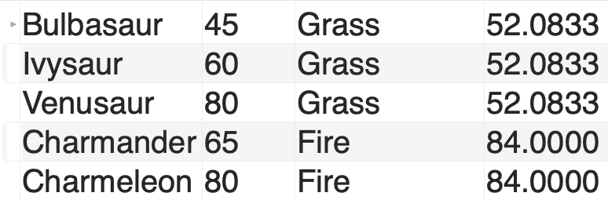
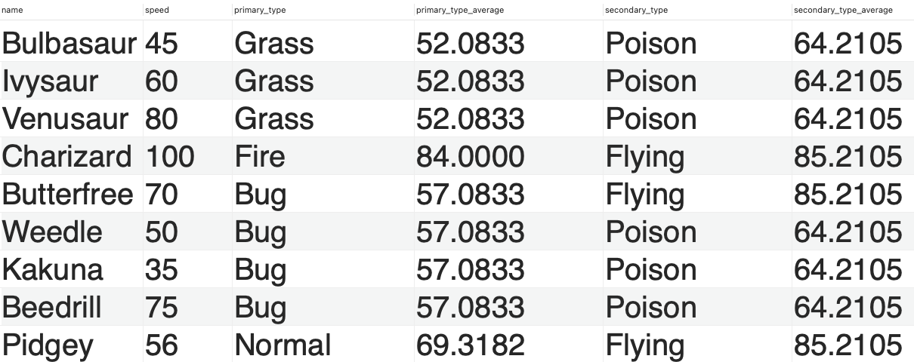

Database design
Overview
MySQL
Taxi database
Retrieve the following data by querying:
- When is the busiest time of the day?
SELECT HOUR(tpep_pickup_datetime) AS 'Busiest hour of day', COUNT(HOUR(tpep_pickup_datetime)) AS 'Number of pickups'
FROM trips
GROUP BY HOUR(tpep_pickup_datetime)
ORDER BY COUNT(HOUR(tpep_pickup_datetime)) DESC
LIMIT 1;
- What payment type has the highest fare amount on average?
SELECT payment_type, AVG(fare_amount)
FROM trips
GROUP BY payment_type
ORDER BY AVG(fare_amount) DESC;
- At what time of day (by the hour) are the longest trips on average?
SELECT HOUR(tpep_pickup_datetime) AS 'Hour of day with longest trips',
AVG(trip_distance)
FROM trips
GROUP BY HOUR(tpep_pickup_datetime)
ORDER BY AVG(trip_distance) DESC
LIMIT 1;
- What are the average tip amount for each passenger count? Does more passengers mean more tips?
SELECT passenger_count, AVG(tip_amount)
FROM trips
GROUP BY passenger_count
ORDER BY passenger_count;
- Do longer turns mean more passengers?
SELECT CASE
WHEN trip_distance >= 0 AND trip_distance < 2 THEN '0-2'
WHEN trip_distance >= 2 AND trip_distance < 4 THEN '2-4'
WHEN trip_distance >= 4 AND trip_distance < 6 THEN '4-6'
WHEN trip_distance >= 6 AND trip_distance < 8 THEN '6-8'
WHEN trip_distance >= 8 AND trip_distance < 10 THEN '8-10'
WHEN trip_distance >= 10 AND trip_distance < 15 THEN '10-15'
WHEN trip_distance >= 15 AND trip_distance < 20 THEN '15-20'
ELSE '20+'
END AS distance, AVG(passenger_count)
FROM trips
GROUP BY distance
ORDER BY distance+0;
Coffee database
Retrieve the following data by querying:
- Select the order_table id and the customers phone number for all orders of product id 3
SELECT order_table.order_table_id, customer.phone_number
FROM order_table
INNER JOIN customer
ON order_table.customer_id = customer.customer_id
WHERE order_table.product_id = 3;
- Select product names and order time for the espresso coffees sold between January 15th 2021 and February 14th 2021
SELECT product.name, order_table.order_table_datetime
FROM order_table
INNER JOIN product
ON order_table.product_id = product.product_id
WHERE product.name = "Espresso"
AND order_table.order_table_datetime BETWEEN '2021-01-15' AND '2021-02-14';
- Select the product name and price and order time for all orders from females in February 2021
SELECT product.name, product.price, order_table.order_table_datetime
FROM order_table
INNER JOIN product
ON order_table.product_id = product.product_id
INNER JOIN customer
ON order_table.customer_id = customer.customer_id
WHERE (MONTH(order_table.order_table_datetime) = 2
AND YEAR(order_table.order_table_datetime) = 2021)
AND customer.gender = 'F';
- From the products table, select the name for all products that have a price greater than 30 or a coffee origin of Sri Lanka
SELECT product.name
FROM product
INNER JOIN country
ON product.country_id = country.country_id
WHERE product.price > 30
OR country.country = "Sri Lanka";
- From the products table, select the name and price of all products with a coffee origin equal to Columbia or Sverige. Ordered by name from A-Z
SELECT product.name, product.price
FROM product
INNER JOIN country
ON product.country_id = country.country_id
WHERE country.country = "Columbia"
OR country.country = "Sverige"
ORDER BY product.name;
- From the orders table, select all the orders from February 2021 for customers with id's 2, 4, 6 or 8
SELECT *
FROM order_table
INNER JOIN customer
ON order_table.customer_id = customer.customer_id
WHERE (MONTH(order_table.order_table_datetime) = 2
AND YEAR(order_table.order_table_datetime) = 2021)
AND customer.customer_id IN (2, 4, 6, 8);
- From the customers table, select the first name and phone number of all customers who's last name containing the pattern "ar"
SELECT customer.firstname, customer.phone_number
FROM customer
WHERE customer.lastname LIKE '%ar%';
- From the customers table, select the distinct last names and order alphabetically from A-Z
SELECT DISTINCT customer.lastname
FROM customer
ORDER BY customer.lastname;
- From the orders table, select the first 3 orders placed by customer with id 1 in February 2021
SELECT *
FROM order_table
WHERE customer_id = 1
AND (MONTH(order_table_datetime) = 2
AND YEAR(order_table_datetime) = 2021)
ORDER BY order_table_datetime
LIMIT 3;
- From the products table, select the name, price and coffee origin but rename the price to retail_price in the results set
SELECT product.name, product.price AS retail_price, country.country
FROM product
INNER JOIN country
ON product.country_id = country.country_id;
- Display all data from customers who do not have a phone number entered into the customer table
SELECT *
FROM customer
WHERE phone_number IS NULL;
- Display all products and their country of origin in a single table
SELECT product.name, country.country
FROM product
INNER JOIN country
ON product.country_id = country.country_id;
- Display all orders, customer firstname & lastname, and the country of origin of the product they ordered
SELECT order_table.order_table_id,
order_table.order_table_datetime,
product.name, country.country,
customer.firstname, customer.lastname
FROM order_table
INNER JOIN product
ON order_table.product_id = product.product_id
INNER JOIN country
ON product.country_id = country.country_id
INNER JOIN customer
ON order_table.customer_id = customer.customer_id
Employees database
Retrieve the following data by querying:
- Join the two tables by department_number and display all
SELECT *
FROM employees
INNER JOIN departments
ON departments.department_number = employees.department_number;
- Retrieve all the employees from Accounting (using joins)
SELECT employee_name, id
FROM employees
INNER JOIN departments
ON departments.department_number = employees.department_number
WHERE departments.department_name = "ACCOUNTING";
- Retrieve only the names of all employees from operations and research
SELECT employee_name
FROM employees
INNER JOIN departments
ON departments.department_number = employees.department_number
WHERE departments.department_name = "OPERATIONS"
OR departments.department_name = "RESEARCH";
- Retrieve all names of all salesmen from Chicago
SELECT employee_name
FROM employees
INNER JOIN departments
ON departments.department_number = employees.department_number
WHERE departments.location = "CHICAGO"
AND employees.job = "SALESMAN";
- Retrieve the names of all salesmen that are not from Chicago
SELECT employee_name
FROM employees
INNER JOIN departments
ON departments.department_number = employees.department_number
WHERE departments.location != "CHICAGO"
AND employees.job = "SALESMAN";
- Retrieve the id of all clerks from New York
SELECT id
FROM employees
INNER JOIN departments
ON departments.department_number = employees.department_number
WHERE departments.location = "NEW YORK"
AND employees.job = "CLERK";
- Retrieve all data from employees and their department except clerks or employees from New York with a commission
SELECT *
FROM employees
INNER JOIN departments
ON departments.department_number = employees.department_number
WHERE employees.job != "CLERK"
OR (employees.commission IS NULL AND departments.location = "NEW YORK" AND employees.job != "CLERK");
- Retrieve the average salary of all employees
SELECT AVG(salary)
FROM employees;
- Retrieve the names of employees with a salary above the average
SELECT employee_name
FROM employees
WHERE salary > (SELECT AVG(salary)
FROM employees);
- Retrieve the department name and average salary of all departments
SELECT department_name, AVG(salary)
FROM departments
INNER JOIN employees USING(department_number)
GROUP BY department_name;
- Retrieve the department name and average salary of all departments with an average higher than the average department salary
SELECT department_name, AVG(salary)
FROM departments
INNER JOIN employees USING(department_number)
GROUP BY department_name
HAVING AVG(salary) > (SELECT AVG(salary) FROM employees);
- Retrieve all departments and their average salary if the department has an salary average higher than the total average department salary excluding commission?
SELECT department_name, AVG(salary)
FROM departments
INNER JOIN employees USING(department_number)
GROUP BY department_name
HAVING AVG(salary) > (SELECT AVG(salary) FROM employees);
- Same question: Including commission?
SELECT department_name, AVG(salary)
FROM departments
INNER JOIN employees USING(department_number)
GROUP BY department_name
HAVING AVG(salary) > (SELECT AVG(salary + commission) FROM employees);
Spotify database
Retrieve the following data by querying:
- How many songs have explicit content?
SELECT COUNT(*)
FROM spotify
WHERE explicit = 1;
- Display all songs made between 2000-2010
SELECT song
FROM spotify
WHERE year > 1999 AND year < 2011;
- What is the name of the most danceable track from 2001?
SELECT song
FROM spotify
WHERE year = 2001
ORDER BY danceability DESC
LIMIT 1;
- Display only the artist’s name and song title of tracks with a key between 1-5
SELECT artist, song
FROM spotify
WHERE `key` > 0 AND `key` < 6;
- Display all data of songs starting with 'B' that has a key between 1-5
SELECT *
FROM spotify
WHERE `key` > 0 AND `key` < 6
AND song LIKE 'B%';
Pokemon database
Retrieve the following data by querying:
- All pokemon with all their columns
SELECT *
FROM pokemon;
- Only the name of all pokemon
SELECT name
FROM pokemon;
- All grass type pokemon
SELECT *
FROM pokemon
WHERE primary_type = 'grass';
- All pokemon with a speed above 56
SELECT *
FROM pokemon
WHERE speed > 56;
- All pokemon with a secondary type
SELECT *
FROM pokemon
WHERE secondary_type != 'null';
- The name of all pokemon with a special defence less than 56 and a special attack higher than 65
SELECT *
FROM pokemon
WHERE special_defence < 56
AND special_attack > 65;
- All grass type pokemon starting with the letter 'B'
SELECT *
FROM pokemon
WHERE primary_type = 'grass'
AND name LIKE 'B%';
- All fire or ground pokemon with an attack higher than 50
SELECT *
FROM pokemon
WHERE primary_type = 'Fire'
OR primary_type = 'Ground'
AND attack > 50;
- The first 10 pokemon by pokedex number ordered by their speed
SELECT *
FROM pokemon
WHERE pokedex_number <= 10
ORDER BY speed;
- All pokemon without a secondary type, starting with 'P' with an attack or defence above 40
SELECT *
FROM pokemon
WHERE name LIKE 'P%'
AND secondary_type = 'null'
AND (attack > 40 OR defence > 40);
- The 10 pokemon with the highest attack
SELECT *
FROM pokemon
ORDER BY attack DESC
LIMIT 10;
- All pokemon that contains the latter 'C' in their name - ordered alphabetically'
SELECT *
FROM pokemon
WHERE name LIKE '%C%'
ORDER BY name;
- What is the average speed of all pokemon?
SELECT AVG(speed)
FROM pokemon;
- How many pokemon are in the dataset?
SELECT COUNT(pokedex_number)
FROM pokemon;
- What is the maximum primary type?
SELECT MAX(primary_type)
FROM pokemon;
- What is the minimum primary type?
SELECT MIN(primary_type)
FROM pokemon;
- What is the max speed of all pokemon?
SELECT MAX(speed)
FROM pokemon;
- What is the average speed of all pokemon with 'Ground' as primary type?
SELECT AVG(speed)
FROM pokemon
WHERE primary_type = 'Ground';
- Display the average speed of each primary type of pokémon
SELECT primary_type, AVG(speed)
FROM pokemon
GROUP BY primary_type
ORDER BY primary_type;
- Retrieve a result set of a pokemons name, their speed and the average speed of their primary_type:

SELECT `name`, speed, primary_type, primary_type_average
FROM pokemon p1
INNER JOIN (SELECT primary_type, AVG(speed) AS primary_type_average
FROM pokemon
GROUP BY primary_type) p2
USING(primary_type)
- Retrieve a result set with pokemon whose secondary type speed is faster than their primary type speed on average

SELECT `name`, speed, primary_type, primary_type_average, secondary_type, secondary_type_average
FROM pokemon p1
INNER JOIN (SELECT primary_type, AVG(speed) AS primary_type_average
FROM pokemon
WHERE primary_type != 'null'
GROUP BY primary_type) p2
USING(primary_type)
INNER JOIN (SELECT secondary_type, AVG(speed) AS secondary_type_average
FROM pokemon
WHERE secondary_type != 'null'
GROUP BY secondary_type) p3
USING(secondary_type)
HAVING secondary_type_average > primary_type_average;
RegEx - Regular Expressions
First exercises
- Write a regular expression such that a correct input lives up to the following Danish phone number standard: +45 54342355
^\+45 \d{8}$
- Write a regular expression such that a correct input lives up to the standard of a Danish cpr number
^\d{6}-\d{4}$
- Write a regular expression that checks if a given string is a valid email address
^\w{1,}@\w{1,}(.\w{2,})+$
RegEx in MySQL - Spotify Database
- How many artist have numbers in their artist name?
SELECT COUNT(DISTINCT artist)
FROM spotify
WHERE artist REGEXP '[:digit:]+';
- How many distinct artists either start with a number and ends with a number?
SELECT COUNT(DISTINCT artist)
FROM spotify
WHERE artist REGEXP '^[:digit:]+ | [:digit:]+$';
- How many songs have features?
SELECT COUNT(DISTINCT song)
FROM spotify
WHERE song REGEXP 'feat';